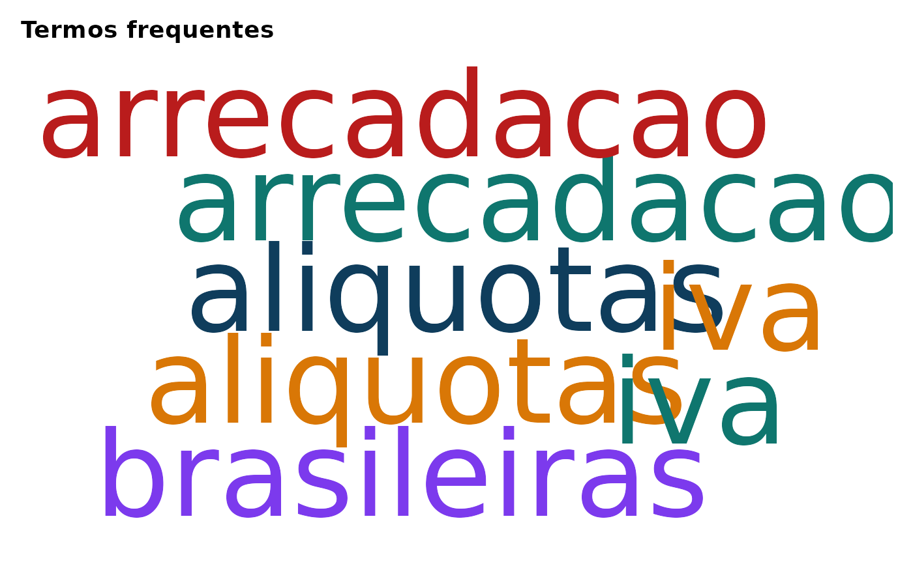

ac_wordcloud() cria uma nuvem de palavras a partir de uma tabela de
frequencias, tipicamente gerada por ac_count().
A funcao usa o pacote wordcloud para desenhar a nuvem e trabalha
com as colunas token e n.
Arguments
- x
Um
data.frameoutibble::tibble()contendo, no minimo, as colunastokenen.- max_words
Numero maximo de palavras a desenhar. Padrao:
100.- min_n
Frequencia minima para incluir um termo. Padrao:
1.- scale
Vetor numerico de comprimento 2 indicando o intervalo de tamanhos das palavras. Padrao:
c(4, 0.8).- random_order
Logico. Se
TRUE, plota em ordem aleatoria. SeFALSE(padrao), as palavras mais frequentes tendem a aparecer mais ao centro.- colors
Vetor de cores usado no grafico. Padrao:
c("#2C7FB8", "#7FCDBB", "#EDF8B1", "#253494").- ...
Argumentos adicionais encaminhados para
wordcloud::wordcloud().
Details
Como wordcloud::wordcloud() desenha diretamente no dispositivo
grafico ativo, esta funcao nao retorna um objeto ggplot. Em vez
disso, produz o grafico como efeito colateral e retorna
invisivelmente a tabela usada no desenho.
Examples
df <- data.frame(
id = c("d1", "d2", "d3"),
texto = c("A A B", "B C", "A C"),
stringsAsFactors = FALSE
)
corp <- ac_corpus(df, text = texto, docid = id)
freq <- ac_count(corp)
if (requireNamespace("wordcloud", quietly = TRUE)) {
ac_wordcloud(freq, max_words = 20)
}
